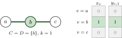
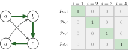
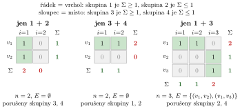
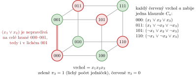
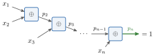
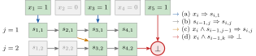

14.7 Cvičení 7: Enkódování do SAT¶
V testu je typická úloha „zformulujte daný problém jako ILP nebo SAT“. Všechna řešení níže proto mají stejnou kostru: proměnné s významem, omezení po krocích „chceme … \(\to\) implikace \(\to\) klauzule“, celá formule a závěr (korektnost, čtení řešení, velikost). Stavební bloky „alespoň jedna“, „nejvýše jedna“, „právě jedna“ a „nejvýše \(k\)“ jsou z definice 14.15.
Postup na papíře: kódování do SAT
- Hlavička. Napiš, co se na co převádí: „Redukce: \(X\mathrel{\href{../ch-redukce/ch-redukce-jak-porovnat-slozitost-dvou-problemu.html#def-redukce}{\class{woo-pk-def-redukce}{\redp}}}\href{../ch-cook/ch-cook-cook-levinova-veta.html#prob-sat}{\class{woo-pk-prob-sat}{\prob{SAT}}}\), instance \(\mapsto\) formule \(\varphi\).“ Ošetři triviální případy (např. \(k\ge|V|\) – odpověď je jasná, vypiš pevnou splnitelnou/nesplnitelnou formuli; jinak by binárně zadané obrovské \(k\) dalo exponenciálně mnoho proměnných).
- Proměnné. Každou zaveď slovy: „\(x_v=1 \iff v\in C\)“, „\(p_{v,i}=1 \iff v\) je na \(i\)-tém místě“. Typicky: výběr objektu, přiřazení objektu hodnotě/barvě/pozici, pomocné čítače.
- Omezení. Každou podmínku zadání zvlášť, jako očíslovaný krok: chceme (věta česky) \(\to\) implikace (\(A\land B\Rightarrow C\)) \(\to\) klauzule (\(\lnot A\lor\lnot B\lor C\)) a pro jaké indexy platí. Kde to jde, použij pojmenovaný blok: alespoň jedna, nejvýše jedna, právě jedna, nejvýše \(k\).
- Celá formule \(\varphi\) = konjunkce všech skupin.
- Závěr. (a) korektnost: (\(\Rightarrow\)) z řešení instance sestroj model, (\(\Leftarrow\)) z modelu přečti řešení; (b) jak číst řešení z modelu; (c) velikost: počet proměnných a klauzulí v \(O\)-notaci – musí být polynomiální ve velikosti vstupu.
Typické chyby u kódování
- „Nejvýše \(k\)“ zakázáním všech \((k+1)\)-tic: \(\binom{n}{k+1}\) klauzulí je pro \(k\approx n/2\) exponenciálně mnoho – taková redukce není polynomiální. Použij pozice (cvičení 7.1) nebo čítač (cvičení 7.4).
- Proměnné bez významu, nebo podmínka zapsaná jako něco, co není klauzule („\(x_u\neq x_v\)“, „\(\sum x_v\le k\)“).
- Zapomenout směr (\(\Leftarrow\)): ukázat jen, že z řešení umíme udělat model, a ne naopak.
- Neuvést velikost – bez ní nevíme, že redukce je polynomiální.
Cvičení 7.1
Navrhněte enkódování následujících problémů do SAT.
- \(\href{../ch-is/ch-is-vertex-cover.html#prob-vc}{\class{woo-pk-prob-vc}{\prob{Vertex Cover}}}\): Je dán graf \(G=(V,E)\) a číslo \(k\). Existuje množina \(C\subseteq V\), \(|C|\le k\), taková, že každá hrana má aspoň jeden konec v \(C\)?
- \(\href{../ch-is/sec-cv3.html#cv-3-6}{\class{woo-pk-pojem-dominating-set}{\prob{Dominating Set}}}\): Je dán graf \(G=(V,E)\) a číslo \(k\). Existuje množina \(D\subseteq V\), \(|D|\le k\), taková, že každý vrchol leží v \(D\) nebo má souseda v \(D\)?
Řešení
Redukce: \(\href{../ch-is/ch-is-vertex-cover.html#prob-vc}{\class{woo-pk-prob-vc}{\prob{Vertex Cover}}} \mathrel{\href{../ch-redukce/ch-redukce-jak-porovnat-slozitost-dvou-problemu.html#def-redukce}{\class{woo-pk-def-redukce}{\redp}}} \href{../ch-cook/ch-cook-cook-levinova-veta.html#prob-sat}{\class{woo-pk-prob-sat}{\prob{SAT}}}\), instance \((G,k)\) \(\mapsto\) formule \(\varphi_{G,k}\).
1. Vertex Cover. Značíme \(n=|V|\), \(m=|E|\). Je-li \(k\ge n\), je odpověď \(\ANO\) (\(C=V\)) a vypíšeme pevnou splnitelnou formuli, např. \((z)\). Dál \(k<n\).
Krok 1 – proměnné.
- \(x_v\) pro \(v\in V\): \(x_v=1 \iff v\in C\);
- \(y_{v,i}\) pro \(v\in V\), \(i\in\{1,\dots,k\}\): \(y_{v,i}=1 \iff\) „\(v\) je \(i\)-tým vybraným vrcholem“ (pozice v \(C\), jako u kliky v oddílu 14.3.5). Pozice slouží k vyjádření \(|C|\le k\).
Krok 2 – omezení.
- Chceme: každá hrana \(\{u,v\}\) má konec v \(C\). Implikace \(\lnot x_u\Rightarrow x_v\), klauzule \((x_u\lor x_v)\) pro každou \(\{u,v\}\in E\). (\(m\) klauzulí)
- Chceme: každý vybraný vrchol má pozici. Implikace \(x_v\Rightarrow(y_{v,1}\lor\dots\lor y_{v,k})\), klauzule \((\lnot x_v\lor y_{v,1}\lor\dots\lor y_{v,k})\) pro každé \(v\in V\). (\(n\) klauzulí)
- Chceme: na každé pozici nejvýše jeden vrchol – blok nejvýše jedna z \(y_{v_1,i},\dots,y_{v_n,i}\). Implikace \(y_{u,i}\Rightarrow\lnot y_{v,i}\), klauzule \((\lnot y_{u,i}\lor\lnot y_{v,i})\) pro každé \(i\) a \(u\neq v\). (\(k\binom n2\) klauzulí)
Krok 3 – formule.
Krok 4 – závěr.
- (\(\Rightarrow\)) Je-li \(C=\{c_1,\dots,c_r\}\), \(r\le k\), vrcholové pokrytí, nastavíme \(x_v=1\iff v\in C\), \(y_{c_j,j}=1\) a ostatní \(y\) na 0. (a) platí, protože \(C\) pokrývá hrany; (b) \(c_j\) má pozici \(j\); (c) na pozici \(j\) je jen \(c_j\).
- (\(\Leftarrow\)) V modelu vezmeme \(C=\{v: x_v=1\}\). Podle (a) je to pokrytí. Podle (b) má každé \(v\in C\) nějakou pozici \(p(v)\) s \(y_{v,p(v)}=1\) a podle (c) mají různé vrcholy různé pozice – \(p\) je prosté zobrazení \(C\to\{1,\dots,k\}\), tedy \(|C|\le k\).
- Čtení řešení: \(C=\{v: x_v=1\}\).
- Velikost: \(n+nk\) proměnných, \(m+n+k\binom n2=O(m+kn^2)\) klauzulí – polynomiální (díky \(k<n\)).
Příklad. Cesta \(a-b-c\), \(k=1\): klauzule \((x_a\lor x_b)\), \((x_b\lor x_c)\); \((\lnot x_a\lor y_{a,1})\), \((\lnot x_b\lor y_{b,1})\), \((\lnot x_c\lor y_{c,1})\); \((\lnot y_{a,1}\lor\lnot y_{b,1})\), \((\lnot y_{a,1}\lor\lnot y_{c,1})\), \((\lnot y_{b,1}\lor\lnot y_{c,1})\) – celkem \(2+3+3=8\). Model \(x_b=y_{b,1}=1\) (ostatní 0) dává \(C=\{b\}\).

Model pro \(\href{../ch-is/ch-is-vertex-cover.html#prob-vc}{\class{woo-pk-prob-vc}{\prob{Vertex Cover}}}\) i \(\href{../ch-is/sec-cv3.html#cv-3-6}{\class{woo-pk-pojem-dominating-set}{\prob{Dominating Set}}}\) na cestě \(a-b-c\) s \(k=1\): vybrán je jen \(b\), který má pozici 1.
Redukce: \(\href{../ch-is/sec-cv3.html#cv-3-6}{\class{woo-pk-pojem-dominating-set}{\prob{Dominating Set}}} \mathrel{\href{../ch-redukce/ch-redukce-jak-porovnat-slozitost-dvou-problemu.html#def-redukce}{\class{woo-pk-def-redukce}{\redp}}} \href{../ch-cook/ch-cook-cook-levinova-veta.html#prob-sat}{\class{woo-pk-prob-sat}{\prob{SAT}}}\), instance \((G,k)\) \(\mapsto\) formule \(\psi_{G,k}\).
2. Dominating Set. Stejné proměnné \(x_v\), \(y_{v,i}\) i stejné kroky (b), (c) – liší se jen podmínka (a). Značíme \(N(v)\) množinu sousedů \(v\). Triviální případ \(k\ge n\) opět ošetříme zvlášť.
- (a')Chceme: každý vrchol \(v\) leží v \(D\) nebo má souseda v \(D\). Implikace \(\lnot x_v\Rightarrow\bigvee_{u\in N(v)}x_u\), klauzule \(\bigl(x_v\lor\bigvee_{u\in N(v)}x_u\bigr)\) pro každé \(v\in V\) – blok alespoň jedna z uzavřeného okolí \(N[v]=N(v)\cup\{v\}\). (\(n\) klauzulí o celkové délce \(n+2m\))
Formule: \(\psi_{G,k}=\bigwedge_{v}\bigl(x_v\lor\bigvee_{u\in N(v)}x_u\bigr)\land\text{(b)}\land\text{(c)}\).
Závěr: korektnost stejně jako u VC (z (a') plyne, že \(D=\{v:x_v=1\}\) dominuje, (b)+(c) dávají \(|D|\le k\); naopak z dominující množiny sestavíme model stejně). Čtení: \(D=\{v: x_v=1\}\). Velikost: \(n+nk\) proměnných, \(2n+k\binom n2=O(kn^2)\) klauzulí. Na cestě \(a-b-c\) s \(k=1\): klauzule \((x_a\lor x_b)\), \((x_a\lor x_b\lor x_c)\), \((x_b\lor x_c)\) a stejné (b), (c) – 9 klauzulí, model \(D=\{b\}\).
Ověřeno skriptem: obě kódování (i varianta se zakázanými \((k+1)\)-ticemi) porovnána s hrubou silou na všech grafech do 5 vrcholů a všech \(k=0,\dots,n\) (6 504 instancí), včetně čtení \(C\), \(D\) z modelu a počtů klauzulí. Opačný směr – NP-těžkost \(\href{../ch-is/sec-cv3.html#cv-3-6}{\class{woo-pk-pojem-dominating-set}{\prob{Dominating Set}}}\) – je redukce VC na DS z cvičení 3.
Cvičení 7.2
Navrhněte enkódování následujících problémů do SAT.
- \(\href{../ch-cisla/ch-cisla-ulohy-navic.html#un-11-3}{\class{woo-pk-pojem-hp}{\prob{Hamiltonian Path}}}\): Má orientovaný graf \(G=(V,E)\) orientovanou cestu, která navštíví každý vrchol právě jednou?
- \(\href{../ch-cisla/ch-cisla-hamiltonovska-cesta.html#ch-cisla-dhp-hc}{\class{woo-pk-pojem-hc}{\prob{Hamiltonian Cycle}}}\): Má orientovaný graf \(G=(V,E)\) orientovanou kružnici, která navštíví každý vrchol právě jednou?
Jak enkódování upravit pro neorientované grafy? Jsou všechny vaše klauzule nutné?
Řešení
Redukce: \(\href{../ch-cisla/ch-cisla-ulohy-navic.html#un-11-3}{\class{woo-pk-pojem-hp}{\prob{Hamiltonian Path}}} \mathrel{\href{../ch-redukce/ch-redukce-jak-porovnat-slozitost-dvou-problemu.html#def-redukce}{\class{woo-pk-def-redukce}{\redp}}} \href{../ch-cook/ch-cook-cook-levinova-veta.html#prob-sat}{\class{woo-pk-prob-sat}{\prob{SAT}}}\), instance \(G=(V,E)\) \(\mapsto\) formule \(\varphi_G\).
1. Hamiltonovská cesta (orientovaná). Značíme \(n=|V|\); cestu chápeme jako pořadí vrcholů na místech \(1,\dots,n\) (problém DHP, definice 11.1).
Krok 1 – proměnné. \(p_{v,i}\) pro \(v\in V\), \(i\in\{1,\dots,n\}\): \(p_{v,i}=1 \iff\) „vrchol \(v\) je na cestě na \(i\)-tém místě“. Celkem \(n^2\) proměnných.
Krok 2 – omezení.
- Chceme: každý vrchol je na nějakém místě. Blok alespoň jedna: \((p_{v,1}\lor\dots\lor p_{v,n})\) pro každé \(v\). (\(n\) klauzulí)
- Chceme: každý vrchol je nejvýše na jednom místě. Implikace \(p_{v,i}\Rightarrow\lnot p_{v,j}\), blok nejvýše jedna: \((\lnot p_{v,i}\lor\lnot p_{v,j})\) pro každé \(v\) a \(i<j\). (\(n\binom n2\) klauzulí)
- Chceme: na každém místě je nějaký vrchol: \((p_{v_1,i}\lor\dots\lor p_{v_n,i})\) pro každé \(i\). (\(n\) klauzulí)
- Chceme: na každém místě je nejvýše jeden vrchol: \((\lnot p_{u,i}\lor\lnot p_{v,i})\) pro každé \(i\) a \(u\neq v\). (\(n\binom n2\) klauzulí)
- Chceme: sousední místa spojuje hrana. Je-li \(u\) na místě \(i\) a \(v\) na místě \(i+1\), musí být \((u,v)\in E\). Implikace \(p_{u,i}\land p_{v,i+1}\Rightarrow\bot\) pro nehranu \((u,v)\notin E\), \(u\neq v\); klauzule \((\lnot p_{u,i}\lor\lnot p_{v,i+1})\) pro \(i=1,\dots,n-1\). (\((n-1)\cdot|\overline E|\) klauzulí, kde \(|\overline E|\le n(n-1)\) je počet uspořádaných dvojic \(u\neq v\) bez hrany)
Krok 3 – formule. \(\varphi_G\) = konjunkce skupin 1–5.
Krok 4 – závěr.
- (\(\Rightarrow\)) Cesta \(w_1,w_2,\dots,w_n\): nastavíme \(p_{w_i,i}=1\), ostatní 0. Skupiny 1–4 platí, protože je to bijekce vrcholy \(\leftrightarrow\) místa; skupina 5, protože \((w_i,w_{i+1})\in E\).
- (\(\Leftarrow\)) Podle 1–4 je \(\{(v,i): p_{v,i}=1\}\) bijekce, tedy pořadí \(w_1,\dots,w_n\) všech vrcholů, každý právě jednou. Kdyby \((w_i,w_{i+1})\notin E\), porušíme klauzuli skupiny 5 – je to tedy orientovaná cesta.
- Čtení řešení: pro \(i=1,\dots,n\) vypiš jediný \(v\) s \(p_{v,i}=1\).
- Velikost: \(n^2\) proměnných, \(2n+2n\binom n2+(n-1)|\overline E|=O(n^3)\) klauzulí.
Redukce: \(\href{../ch-cisla/ch-cisla-hamiltonovska-cesta.html#ch-cisla-dhp-hc}{\class{woo-pk-pojem-hc}{\prob{Hamiltonian Cycle}}} \mathrel{\href{../ch-redukce/ch-redukce-jak-porovnat-slozitost-dvou-problemu.html#def-redukce}{\class{woo-pk-def-redukce}{\redp}}} \href{../ch-cook/ch-cook-cook-levinova-veta.html#prob-sat}{\class{woo-pk-prob-sat}{\prob{SAT}}}\), instance \(G=(V,E)\) \(\mapsto\) formule \(\varphi'_G\).
2. Hamiltonovská kružnice. Totéž a navíc „z posledního místa vede hrana zpět na první“: skupinu 5 píšeme i pro \(i=n\) s místem \(i+1:=1\), tedy \((\lnot p_{u,n}\lor\lnot p_{v,1})\) pro \((u,v)\notin E\). Klauzulí je \(2n+2n\binom n2+n|\overline E|=O(n^3)\). Předpokládáme \(n\ge2\). (nad rámec) Kružnici lze otočit tak, aby začínala pevným vrcholem \(v_1\), takže smíme přidat \((p_{v_1,1})\) – rozbití symetrie, splnitelnost se nezmění (ověřeno skriptem pro \(n\le4\)).
Příklad. \(V=\{a,b,c,d\}\), \(E=\{(a,b),(b,c),(c,d),(a,c),(d,b)\}\). Nehran je \(12-5=7\), formule pro cestu má \(8+48+3\cdot7=77\) klauzulí a je splnitelná (např. \(a,b,c,d\); jiná hamiltonovská cesta je \(a,c,d,b\)). Formule pro kružnici má \(8+48+4\cdot7=84\) klauzulí a je nesplnitelná – do \(a\) nevede žádná hrana. (Ověřeno skriptem.)

Model pro cestu \(a,b,c,d\): v matici \(p_{v,i}\) je v každém řádku i sloupci právě jedna jednička (permutační matice).
3. Neorientované grafy. Hrana \(\{u,v\}\) dovoluje projít oběma směry, takže skupinu 5 píšeme jen pro dvojice, kde \(\{u,v\}\notin E\) (pro obě pořadí \(u,v\)). Pro kružnici navíc potřebujeme \(n\ge3\): pro \(n=2\) a jedinou hranu by formule byla splnitelná (\(u\to v\to u\)), ale kružnice by použila tutéž hranu dvakrát – takové malé případy ošetříme zvlášť. (Ověřeno skriptem na všech neorientovaných grafech do 5 vrcholů.)
4. Jsou všechny klauzule nutné? Ne. Ze skupin 1–4 stačí dvě: buď 1 a 4, nebo 2 a 3.
- 1 + 4: každý vrchol má aspoň jedno místo a na každém místě je nejvýše jeden vrchol. Vyberme každému vrcholu jedno jeho místo – podle 4 jsou různá, tedy \(n\) vrcholů obsadí všech \(n\) míst. Kdyby měl některý vrchol dvě místa, bylo by obsazených dvojic aspoň \(n+1\) na \(n\) místech a někde by byly dva vrcholy – spor se 4. Proto platí i 2 a 3.
- 2 + 3: symetricky (role vrcholů a míst se prohodí).
- Jiné dvojice nestačí (protipříklady ze skriptu): jen 1 + 2 pro \(n=2\) bez hran – oba vrcholy na místě 1, žádná klauzule skupiny 5 se neuplatní, formule je splnitelná, ač cesta neexistuje; obdobně 3 + 4 (jeden vrchol na všech místech) a 1 + 3 (např. \(n=3\), hrany \((v_1,v_2),(v_1,v_3)\)).

Protipříklady z bodu 4 jako matice \(p_{v,i}\) (zeleně jedničky, \(\Sigma\) = součty řádků a sloupců, červeně porušené). Všimni si: ve všech třech platí zvolené dvě skupiny i skupina 5 (sousední místa obsazuje tentýž vrchol, nebo je mezi nimi hrana), a přesto to není permutace – hamiltonovská cesta v těch grafech neexistuje.
Ušetříme tím \(n\binom n2+n\) klauzulí; asymptoticky zůstává \(O(n^3)\) (skupina 4 a skupina 5). Skupinu 5 stačí psát jen pro nehrany – u hustého grafu je jich málo. Všechny tyto varianty jsou ověřeny skriptem na všech orientovaných grafech do 4 vrcholů (a náhodných s 5 vrcholy), včetně toho, že z modelu redukované formule jde přečíst permutace.
Cvičení 7.3
- Napište Tseitinovy klauzule pro hradlo \(g\leftrightarrow(u\oplus v)\), kde \(\oplus\) je XOR. Ověřte pravdivostní tabulkou, že vynucují přesně \(g=u\oplus v\).
- Formule \(\pi_n\) v proměnných \(x_1,\dots,x_n\) je pravdivá, právě když je lichý počet z nich pravdivých. Napište nějakou CNF formuli ekvivalentní s \(\pi_n\) (bez nových proměnných). Kolik má klauzulí? Ukažte, že neexistuje ekvivalentní CNF formule s menším počtem klauzulí.
- Sestrojte pomocí Tseitinovy transformace CNF formuli ekvisplnitelnou s \(\pi_n\), která má \(O(n)\) klauzulí.
Řešení
1. Hradlo XOR. Zapíšeme obě implikace \(g\Rightarrow(u\oplus v)\) a \((u\oplus v)\Rightarrow g\):
| chceme | implikace | klauzule |
|---|---|---|
| \(g=1\) \(\Rightarrow\) aspoň jeden vstup 1 | \(g\Rightarrow u\lor v\) | \(D_1=(\lnot g\lor u\lor v)\) |
| \(g=1\) \(\Rightarrow\) ne oba vstupy 1 | \(g\Rightarrow\lnot(u\land v)\) | \(D_2=(\lnot g\lor\lnot u\lor\lnot v)\) |
| \(u=1,v=0\) \(\Rightarrow\) \(g=1\) | \(u\land\lnot v\Rightarrow g\) | \(D_3=(g\lor\lnot u\lor v)\) |
| \(u=0,v=1\) \(\Rightarrow\) \(g=1\) | \(\lnot u\land v\Rightarrow g\) | \(D_4=(g\lor u\lor\lnot v)\) |
Pravdivostní tabulka (ověřena skriptem):
| \(u\) | \(v\) | \(g\) | \(u\oplus v\) | zakáže |
|---|---|---|---|---|
| 0 | 0 | 0 | 0 | ✓ |
| 0 | 0 | 1 | 0 | \(D_1\) |
| 0 | 1 | 0 | 1 | \(D_4\) |
| 0 | 1 | 1 | 1 | ✓ |
| 1 | 0 | 0 | 1 | \(D_3\) |
| 1 | 0 | 1 | 1 | ✓ |
| 1 | 1 | 0 | 0 | ✓ |
| 1 | 1 | 1 | 0 | \(D_2\) |
Přežijí přesně řádky s \(g=u\oplus v\); každý špatný řádek zakáže právě jedna klauzule. Každá klauzule je tedy „zákaz“ jednoho špatného řádku – obdobně jako u hradla AND (příklad 14.20).
2. CNF pro paritu bez nových proměnných. Pro každé ohodnocení \(a\in\{0,1\}^n\) se sudým počtem jedniček vezmeme klauzuli, která je nepravdivá právě v \(a\):
Ekvivalence: v sudém \(a\) je nepravdivá klauzule \(C_a\); v lichém ohodnocení jsou všechny \(C_a\) pravdivé (každá je nepravdivá jen ve „svém“ \(a\)). Klauzulí je \(2^{n-1}\) (polovina z \(2^n\) ohodnocení má sudý počet jedniček, \(n\ge1\)). Pro \(n=3\): \((x_1\lor x_2\lor x_3)(x_1\lor\lnot x_2\lor\lnot x_3)(\lnot x_1\lor x_2\lor\lnot x_3)(\lnot x_1\lor\lnot x_2\lor x_3)\).
Menší to nejde. Nechť \(\psi\) je libovolná CNF ekvivalentní s \(\pi_n\). Klauzule obsahující \(x\) i \(\lnot x\) je vždy pravdivá a můžeme ji vynechat, takže předpokládejme, že žádnou takovou \(\psi\) nemá.
- Každá klauzule \(C\) v \(\psi\) obsahuje všech \(n\) proměnných. Kdyby \(C\) neobsahovala \(x_j\): vezmeme ohodnocení \(b\), ve kterém jsou všechny literály \(C\) nepravdivé (jde to – \(C\) neobsahuje \(x\) i \(\lnot x\)), ostatní proměnné libovolně. Má-li \(b\) sudý počet jedniček, překlopíme \(x_j\) – \(C\) zůstane nepravdivá (neobsahuje \(x_j\)) a počet jedniček bude lichý. Pak \(\pi_n(b)=1\), ale \(\psi(b)=0\) – spor s ekvivalencí.
- Klauzule se všemi \(n\) proměnnými je nepravdivá v jediném ohodnocení.
- \(\psi\) musí být nepravdivá ve všech \(2^{n-1}\) sudých ohodnoceních a každé z nich „zabije“ jiná klauzule. Tedy \(\psi\) má aspoň \(2^{n-1}\) klauzulí.

Krychle \(\{0,1\}^3\) pro \(n=3\). Klauzule se všemi \(n\) proměnnými je nepravdivá v jediném vrcholu; klauzule bez proměnné \(x_j\) je nepravdivá na celé hraně ve směru \(x_j\). Všimni si: sousední vrcholy mají vždy různou paritu, takže každá hrana obsahuje lichý vrchol – kratší klauzule by zabila model \(\pi_n\) (bod 1 důkazu).
(Skriptem ověřeno pro \(n\le3\) prohledáním všech CNF: nejmenší ekvivalentní má 1, 2, 4 klauzule.) Je to stejný jev jako „Nejde to lépe“ u \(\varphi_n\) v oddílu 14.4.1.
Převod: formule \(\pi_n\) \(\mapsto\) ekvisplnitelná CNF \(\psi_n\) (Tseitinova transformace).
3. Tseitin pro paritu. \(\pi_n=x_1\oplus x_2\oplus\dots\oplus x_n\) je řetěz hradel XOR. Zavedeme nové proměnné \(p_2,\dots,p_n\) s významem \(p_i=x_1\oplus\dots\oplus x_i\) (a \(p_1:=x_1\), bez nové proměnné):
- Chceme \(p_i\leftrightarrow(p_{i-1}\oplus x_i)\) pro \(i=2,\dots,n\): čtyři klauzule hradla XOR z bodu 1 s \(g=p_i\), \(u=p_{i-1}\), \(v=x_i\): \((\lnot p_i\lor p_{i-1}\lor x_i)\), \((\lnot p_i\lor\lnot p_{i-1}\lor\lnot x_i)\), \((p_i\lor\lnot p_{i-1}\lor x_i)\), \((p_i\lor p_{i-1}\lor\lnot x_i)\).
- Chceme: výsledek je 1 – klauzule \((p_n)\).
Závěr: hodnoty \(p_i\) jsou určené vstupy (zdola nahoru, jako ve větě 14.22), \(p_n=x_1\oplus\dots\oplus x_n\), a \((p_n)\) platí, právě když je počet jedniček lichý. Ohodnocení \(x\) lze tedy rozšířit na model \(\psi_n\) \(\iff\) \(\pi_n(x)=1\); \(\psi_n\) je s \(\pi_n\) ekvisplnitelná. Velikost: \(n-1\) nových proměnných, \(4(n-1)+1=4n-3=O(n)\) klauzulí (pro \(n=3\): 9). Ověřeno skriptem pro \(n\le8\) a všechna ohodnocení \(x\).

Řetěz hradel XOR pro \(\pi_n\): každé hradlo dá 4 klauzule, výstup jednu.
Cvičení 7.4
Klauzule „nejvýše jeden z \(x_1,\dots,x_n\)“ jsme dosud zapisovali po dvojicích: \(\lnot x_i\lor\lnot x_j\) pro \(i<j\), tedy \(\binom n2\) klauzulí.
- Navrhněte CNF formuli s \(O(n)\) klauzulemi (smíte přidat nové proměnné), která je splnitelná rozšířením ohodnocení \(x_1,\dots,x_n\), právě když je pravdivá nejvýše jedna z proměnných \(x_1,\dots,x_n\).
- Zobecněte konstrukci na podmínku „nejvýše \(k\) z \(x_1,\dots,x_n\)“ s \(O(nk)\) klauzulemi.
- Vraťte se k první úloze a pomocí předchozího bodu zmenšete enkódování \(\href{../ch-is/ch-is-vertex-cover.html#prob-vc}{\class{woo-pk-prob-vc}{\prob{Vertex Cover}}}\).
Řešení
1. Nejvýše jedna v \(O(n)\) – sekvenční kódování. Myšlenka: projdeme proměnné zleva doprava a pamatujeme si jediný bit „už jsem viděl jedničku“. Konstrukce se v literatuře jmenuje sekvenční čítač (Sinz 2005) (název nad rámec cvičení). Předpokládáme \(n\ge2\).
Krok 1 – proměnné. \(x_1,\dots,x_n\) (dané) a nové \(s_1,\dots,s_{n-1}\): \(s_i=1\) znamená „mezi \(x_1,\dots,x_i\) už byla jednička“ (přesněji: klauzule ji k 1 donutí, jakmile tam jednička je).
Krok 2 – omezení.
- Chceme: jednička na místě \(i\) se zapamatuje. \(x_i\Rightarrow s_i\), klauzule \((\lnot x_i\lor s_i)\) pro \(i=1,\dots,n-1\).
- Chceme: paměť se nezapomíná. \(s_{i-1}\Rightarrow s_i\), klauzule \((\lnot s_{i-1}\lor s_i)\) pro \(i=2,\dots,n-1\).
- Chceme: po zapamatované jedničce už další nesmí přijít. \(x_i\land s_{i-1}\Rightarrow\bot\), klauzule \((\lnot x_i\lor\lnot s_{i-1})\) pro \(i=2,\dots,n\).
Krok 3 – formule. \(\mathrm{AMO}_{\mathrm{seq}}=\bigwedge_{i=1}^{n-1}(\lnot x_i\lor s_i)\land\bigwedge_{i=2}^{n-1}(\lnot s_{i-1}\lor s_i)\land\bigwedge_{i=2}^{n}(\lnot x_i\lor\lnot s_{i-1})\).
Krok 4 – závěr.
- (nejvýše jedna jednička \(\Rightarrow\) rozšíření existuje) Položíme \(s_i=x_1\lor\dots\lor x_i\). (a), (b) platí z definice; kdyby (c) neplatila, bylo by \(x_i=1\) a zároveň jednička mezi \(x_1,\dots,x_{i-1}\) – dvě jedničky.
- (dvě jedničky \(x_i=x_j=1\), \(i<j\) \(\Rightarrow\) žádné rozšíření) Z (a) \(s_i=1\), z (b) postupně \(s_{i+1}=\dots=s_{j-1}=1\) a (c) pro \(j\) je porušena.
- Velikost: \(n-1\) nových proměnných, \((n-1)+(n-2)+(n-1)=3n-4=O(n)\) klauzulí (pro \(n=100\): 296 místo \(\binom{100}2=4\,950\)).
Příklad (\(n=4\), \(x=(0,1,0,1)\)): unit propagation dá \(s_2=1\) z \((\lnot x_2\lor s_2)\), \(s_3=1\) z \((\lnot s_2\lor s_3)\), \(s_1=0\) z \((\lnot x_2\lor\lnot s_1)\) a klauzule \((\lnot x_4\lor\lnot s_3)\) je v konfliktu – dvě jedničky odhaleny bez větvení. (Ověřeno skriptem; správnost kódování navíc pro všechna ohodnocení a \(n=2,\dots,8\).)
2. Nejvýše \(k\) v \(O(nk)\). Místo jednoho bitu si pamatujeme čítač do \(k\): proměnné \(s_{i,j}\) pro \(i=1,\dots,n-1\) a \(j=1,\dots,k\) znamenají „mezi \(x_1,\dots,x_i\) jsou aspoň \(j\) jedničky“ (opět: klauzule je k 1 donutí, je-li to pravda). Předpokládáme \(1\le k<n\) (pro \(k\ge n\) není co hlídat, pro \(k=0\) stačí \((\lnot x_i)\) pro všechna \(i\)).
- Chceme: jednička na místě \(i\) znamená aspoň jednu. \(x_i\Rightarrow s_{i,1}\): \((\lnot x_i\lor s_{i,1})\) pro \(i=1,\dots,n-1\).
- Chceme: počet neklesá. \(s_{i-1,j}\Rightarrow s_{i,j}\): \((\lnot s_{i-1,j}\lor s_{i,j})\) pro \(i=2,\dots,n-1\), \(j=1,\dots,k\).
- Chceme: jednička zvýší počet. \(x_i\land s_{i-1,j-1}\Rightarrow s_{i,j}\): \((\lnot x_i\lor\lnot s_{i-1,j-1}\lor s_{i,j})\) pro \(i=2,\dots,n-1\), \(j=2,\dots,k\).
- Chceme: po \(k\) jedničkách už žádná. \(x_i\land s_{i-1,k}\Rightarrow\bot\): \((\lnot x_i\lor\lnot s_{i-1,k})\) pro \(i=2,\dots,n\).
Závěr:
- (nejvýše \(k\) jedniček \(\Rightarrow\) rozšíření) \(s_{i,j}:=\) [počet jedniček v \(x_1,\dots,x_i\) je \(\ge j\)]. (a)–(c) platí z významu; kdyby (d) neplatila, bylo by \(x_i=1\) a před ním už \(k\) jedniček – celkem \(k+1\).
- (aspoň \(k+1\) jedniček \(\Rightarrow\) žádné rozšíření) Indukcí podle \(i\) z (a)–(c): v každém modelu je \(s_{i,j}=1\), kdykoli je mezi \(x_1,\dots,x_i\) aspoň \(j\) jedniček. Je-li \(x_t\) \((k+1)\)-ní jednička (\(t\ge k+1\ge2\)), je mezi \(x_1,\dots,x_{t-1}\) právě \(k\) jedniček, tedy \(s_{t-1,k}=1\) a (d) pro \(i=t\) je porušena.
- Velikost: \(k(n-1)\) nových proměnných, \((n-1)+(n-2)k+(n-2)(k-1)+(n-1)=2nk+n-4k=O(nk)\) klauzulí. Pro \(k=1\) dostaneme přesně bod 1 (\(3n-4\)).
Příklad (\(n=5\), \(k=2\), \(x=(1,0,1,0,1)\) – tři jedničky): propagace dá \(s_{1,1}=1\) (a), \(s_{2,1}=1\) (b), \(s_{3,1}=1\) (a), \(s_{3,2}=1\) (c: \(x_3\land s_{2,1}\)), \(s_{4,1}=s_{4,2}=1\) (b) a klauzule (d) \((\lnot x_5\lor\lnot s_{4,2})\) je v konfliktu. Formule má \(2\cdot5\cdot2+5-8=17\) klauzulí. (Ověřeno skriptem; správnost pro všechna \(n\le7\), \(1\le k<n\) a všechna ohodnocení, počty klauzulí i proměnných podle vzorců.)

Sekvenční čítač pro \(n=5\), \(k=2\) a \(x=(1,0,1,0,1)\): zeleně proměnné, které propagace vynutí na 1. Třetí jednička (\(x_5\)) narazí na \(s_{4,2}=1\) – konflikt.
Redukce: \(\href{../ch-is/ch-is-vertex-cover.html#prob-vc}{\class{woo-pk-prob-vc}{\prob{Vertex Cover}}} \mathrel{\href{../ch-redukce/ch-redukce-jak-porovnat-slozitost-dvou-problemu.html#def-redukce}{\class{woo-pk-def-redukce}{\redp}}} \href{../ch-cook/ch-cook-cook-levinova-veta.html#prob-sat}{\class{woo-pk-prob-sat}{\prob{SAT}}}\) (menší kódování), instance \((G,k)\) \(\mapsto\) formule \(\varphi'_{G,k}\).
3. Menší Vertex Cover. Pozice \(y_{v,i}\) z cvičení 7.1 zahodíme. Je-li \(k\ge n\), vypíšeme pevnou splnitelnou formuli; jinak:
- proměnné \(x_v\) (\(v\in C\)) a pomocné \(s_{i,j}\) čítače nad \(x_{v_1},\dots,x_{v_n}\);
- hrany: \((x_u\lor x_v)\) pro každou \(\{u,v\}\in E\);
- počet: nejvýše \(k\) z \(x_{v_1},\dots,x_{v_n}\) sekvenčním čítačem z bodu 2 (pro \(k=0\) klauzule \((\lnot x_v)\)).
Korektnost plyne z bodu 2 (model existuje \(\iff\) \(\{v:x_v=1\}\) má nejvýše \(k\) prvků) a z (b); čtení \(C=\{v: x_v=1\}\). Velikost: \(n+k(n-1)\) proměnných a \(m+2nk+n-4k=O(m+nk)\) klauzulí místo \(O(m+kn^2)\). Na cestě \(a-b-c\) s \(k=1\): 5 proměnných a \(2+(2\cdot3\cdot1+3-4\cdot1)=2+5=7\) klauzulí. Stejně se zmenší i \(\href{../ch-is/sec-cv3.html#cv-3-6}{\class{woo-pk-pojem-dominating-set}{\prob{Dominating Set}}}\). (Obě zmenšená kódování porovnána s hrubou silou na všech grafech do 5 vrcholů.)